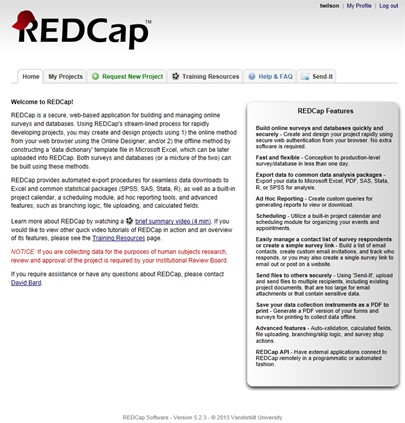
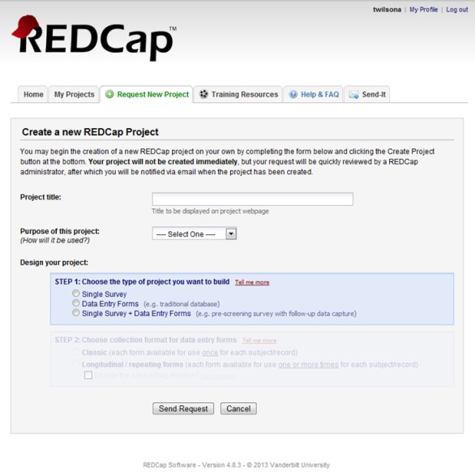

REDCap Overview
The Research Electronic Data Capture (REDCap) system and REDCap Survey are powerful software programs created by Vanderbilt University and supported by the REDCap Consortium to facilitate Institutional Review Board (IRB)-approved clinical research and basic research. Data collected in the course of the research are managed by the program, and can be analyzed by commonly used statistical packages, including SAS, Stata, SPSS, and R.
REDCap is a browser-based, metadata-driven electronic data capture software created by Vanderbilt University. The REDCap Consortium is composed of nearly 900 active institutional partners from more than 70 countries. Programming, networking or database experience is not needed to use REDCap. It is designed to use simple interfaces that handle these details automatically. REDCap is secure and web-based: you can input data or build an online survey or database from anywhere in the world over a secure web connection with authentication and data logging. REDCap allows multi-site access for research that uses multiples sites and institutions. OUHSC maintains three instances of REDCap: the Biomedical and Behavior Methodology Core Customization Instance , the Enterprise Instance, and the Development Instance.
The REDCap system provides functionality and features to enable researchers to rapidly develop databases and online surveys. These databases, data entry forms, and surveys are intuitive, easy to use tools for collecting data, including data validation.
The design, use, and maintenance of REDCap are managed by the Biomedical and Behavioral Methodology Core (BBMC). The BBMC supports and enhances study design, data capture, and analytics for Pediatrics research.
REDCap has a flexible and fine-grained authorization matrix, allowing different members of the study team to have different levels of access (none, read-only or edit) to data entry forms, and access to database management and data export tools. There are provisions to restrict access to data export to allow export of de-identified data only. Advanced features of the system include branching logic for dynamic data entry form generation, file uploading, data importing, and embedded calculated database fields.
REDCap enforces authorization granted to each user by providing and/or enabling certain functions, tabs, links and buttons according to granted privileges.
REDCap includes a full audit trail, recording all operations on the data, including viewing and exporting. The audit log records operation, date and time, and the user performing the operation, permitting review of the audit trail as necessary.
REDCap enforces data integrity protection by design; all “databases” created by users are logical data sets on top of a relational database with built-in integrity protection controls. Additionally, REDCap can help to ensure data quality through use of Double Data Entry mode, forms and records locking and electronic signatures.
Choose the appropriate REDCap instance on campus:
After navigating to the appropriate REDCap instance, users will see the following login screen:
The REDCap username and password are the individual’s OUHSC username and password. When logging in for the first time, users will see a screen to edit their user profile:
A profile confirmation link will be e-mailed to users automatically after they complete their user profile. When the link arrives in the user’s inbox, they can click on the link and they will be ready to login and begin using REDCap. After successfully logging into REDCap, users will see the menu below:
Users can edit/update their profile information at anytime. Clicking on the “My Profile” link in the upper right hand corner of the REDCap login screen takes users to the appropriate screen. Next to the “My Profile” link is the “Log Out” link for users to click when they are finished working in REDCap.
To access a project in REDCap, contact the project's creator (not the REDCap Administrator) and request to be added to the User Rights section for that project.
To add new users to your REDCap project, click "User Rights" on the left sidebar. Type in the individual's OUHSC username, and click "Add with custom rights". If the user has previously logged into REDCap, his/her name will appear on a drop-down box. If the user has NOT logged in previously, you may type his/her username manually. You will be prompted to specify the privileges/user rights you wish to give to this new user.
Note, for security purposes, REDCap Administrators do not add users to your projects.
To request a new REDCap Project, click here and fill out the following survey here.
Note, in order to obtain a new REDCap project, you must have an active IRB application and will be asked to provide the IRB number.
For additional questions about REDCap, please email bbmc-redcap@ouhsc.Home This tab gives a brief overview of REDCap and its features.
- My Projects: This tab shows a list of all projects a user has access to view. In the screenshot below, the user only has access to the public training projects. The list of projects will vary depending on the user.
- Request New Project: This tab contains the steps a user must follow to request the creation of a new project. 
- Training Resources: This tab contains the library of Vanderbilt University REDCap training videos and resources.
- Help & FAQ: This tab contains many questions regarding the features and use of REDCap.
- Send-It:The send-it tab is a secure data transfer application. It allows users to upload files and then designate multiple recipients to download the file in a secure manner.
Navigating the Project Menu:
A user’s project menu is customized based upon the user right’s that are assigned to them. The project menu shown here is for a data entry user who has minimal rights. The REDCap 201 course offers a more complete look at the project menu.
The first block of menu items contains the following information:
- Username and link to log out
- My Projects: Returns user to the main REDCap Menu
- Project Home: Links user to the main page for a specific project (the Project Home page is shown below).
- Project Setup: Takes the user to the settings page for this project

Data Collection
This portion of the REDCap Project Menu contains links for the data collection aspect of a project. Users will utilize these menu options when recording and managing data.
- Manage Survey Participants: This link navigates users to the menu for options on sending surveys to participants.
- Record Status Dashboard: the Dashboard shows the status of all records that have been collected (Complete, Unverified, Incomplete, Completed Survey Response, or Partial Survey Response)
- Add/Edit Records: Use this link to add a new record to the project or to edit responses (must have appropriate permissions to do edit a response)
- Data Collection Instruments: A list of all data collection instruments included in this project. In this example, there is only one data collection instrument named: “REDCap Demo Survey”.

Applications: Lists all extra functions that a user can access.
- Calendar: This is the REDCap built-in calendar function. You can add appointments, create schedules for participants (if project is longitudinal), etc.
- File Repository: The file repository is a place to store important study documents in a centralized location. Examples of documents include: blank consent forms, study fliers for advertisement, study mailers, etc. Do NOT store signed consent forms in this locations.
- Graphical View and Stats: Allows a user to create basic univariate bar graphs and pie charts.
- Report Builder: Gives users the ability to create simple reports. Examples, include: showing a list of all female participants, sorting all participants alphabetically, etc.

REDCap’s Data Collection Instruments:
REDCap utilizes two types of data collection instruments.- Survey: A survey is one of the two types of data collection instruments that REDCap utilizes. You can have multiple surveys within a REDCap project. A REDCap survey can be e-mailed to individual participants where they are given unique “Private Survey URL’s” or a survey can be made public. The public survey creates a “Public Survey URL” that can be posted on a website or e-mailed to participant. Private surveys can only be filled out one time and the REDCap project owner can determine which participants have responded to the survey. Public surveys can be filled out multiple times and has no built-in functioning to determine which participants have responded.
- Form: A form is the other type of data collection instrument within REDCap. Its intended use is in a clinical setting where a researcher enters the data into REDCap. Multiple forms can be used in a REDCap project.
Data Entry (Survey):
To enter a new record into a REDCap project, click on the link under “Data Collection Instruments:” In this example it is “REDCap Demo Survey”.You will be taken to a new screen (shown below).
Click on the “Add new record” button. This will navigate you to the data entry page. You will be able to enter values for the questions in your data collection instrument. At the end of your data collection instrument, you will have the following options under Form Status:
Complete?
- Incomplete
- Unverified
- Complete
Choose the option that best reflects the status of the data collection instrument. You also have the following buttons to complete data entry.
- Save Record: Save the record and exits the data collection instrument.
- Save and Continue: Saves the record and stays in the data collection instrument.
- Cancel: Exits the data collection instrument without saving any changes.
This example used a Survey Data Collection Instrument. If a project utilizes Data Collection Forms, the data entry process is the same.
The report builder in REDCap allows users to create quick ad hoc reports for various uses. Clicking on the Report Builder link in the Applications section takes the user to this screen:
When building a report users have the following options:
- Name of Report: Users can custom name the report to reflect the content it contains
- Fields: Initially, the report builder will only show “Field 1”. Once you use the drop down menu to choose which field you wish to include in the report, REDCap will automatically add “Field 2” below “Field 1”. REDCap will continue to do this for as many fields as you wish to include in the report.
- Limiters: You can limit the report based on the fields you choose. For multiple choice fields, you have the options of “=” and “not =”. Numeric fields can be limited by “=”, “not = “, “<”, “<=”, “>”, and “>=”.
- Order the Results: Users can sort reports by up to two different variables with the option of either ascending or descending sorts.
Example:
In this example, we are creating a report named “Test Report 1”. The variables participant_id, gender, and score are included in the report and it will be sorted on the variable score.
Once the report has been saved, users will see the following screen:
Users will see a list of all reports that have been created. In this instance, there is only 1 report (Test Report 1). Users also have the following options:
- View: Allows users to see the current results of the report. Reports are updated automatically in real-time.
- Edit: Users can make changes to the report.
- Copy: Users can copy a report in its entirety.
- Delete: Delete the report. If deleted, there is no “recycle bin” for users to recover the report. It is gone forever and will have to be recreated if users wishes to use the report again.
View: When viewing a report, it will show you the results and other options:
The report results show the Data Labels (what is seen when a survey is taken or a form is completed) in bold. The variable names are shown below the Data Labels. In this example, the column shows Participant ID as the data label and participant_id as the variable name.
Users are given two download options for reports: Microsoft Excel (CSV) and XML. Also, users can print the page and edit the report from this screen.
Licensing
REDCap software is licensed through the REDCap Consortium at Vanderbilt University. The University of Oklahoma Health Sciences Center joined the REDCap Consortium in 2012.
Compliance
REDCap has been approved for storage of sensitive data. The Project Owner is responsible for the following:
- Obtain IRB approval prior to using REDCap for studies involving human participant research.
- Build the REDCap database (entry forms) in such a way that it corresponds to the study design that will be submitted to the IRB and provides proper data collection tool for all the data necessary for testing study hypothesis (hypotheses).
- Collect all the data necessary for testing study hypothesis (hypotheses)
- Collect only minimally-necessary set of PHI, in addition to those required by study design or operational requirements, to positively identify study subjects during data entry phase.
- In the case of data regarding patient or subjects of OUHSC and her affiliates, all users must comply with HIPAA Privacy Policies and Information Security for Protected Health Information (PHI) and Education Records covered under the Family Educational Rights and Privacy Act (FERPA). (Continue reading about the campus's HIPAA policies and IT Policies.)
Policy
Any authenticated user has a right to access REDCap, review public databases (e.g., demo databases) and create a new database or modify a database to which a corresponding authorization is granted (e.g., his/her own). Currently, the University of Oklahoma Health Sciences Center Directory serves as the authentication source. There are three REDCap installations available.
The College of Medicine provides funding for two instances of REDCap. The first is a Development Box, which is used for testing REDCap projects and REDCap training. The second REDCap instance the College of Medicine supports is the Enterprise Box, which is used for general development and production. The BBMC funds a third instance of REDCap (casually called the BBMC Box) used primarily by research in the Pediatrics Dept, and by researchers requiring additional customization to their REDCap project.
Basic Training Resources
For those that are new to REDCap, there are many resources available to introduce you to REDCap and get you started. Among these training resources:
- OUHSC Resources
- Request individual training tutorials from the REDCap staff
- Access the REDCap 101 Training Manual
- REDCap Consortium Resources
- Overview
- Applications and Modules
- Types of REDCap Projects (3 min)
Advanced Training Resources
For REDCap users needing more in-depth training:
- OUHSC Resources
- Online Training
Frequently Asked Questions
Below are some of the frequently asked questions regarding REDCap. If your question is not listed below you can send an e-mail to bbmc-redcap@ouhsc.edu.General Questions
REDCap is available to all persons with a current OUHSC login id.
To get started using REDCap contact the BBMC using this online form and a representative will contact you to discuss your project.
No. REDCap uses a simple design interface that will handle all of the programming, networking, and database details automatically.
It is recommended that once designed, you have a member of the BBMC review your project. It is important to consider the planned statistical analysis before collecting any data. The BBMC can help assure that you are collecting the appropriate fields, in the appropriate format necessary to perform the needed analysis.
Yes. REDCap has two online survey options, a private survey and a public survey. The private survey utilizes a participant's e-mail address and REDCap sends a unique survey url to each individual participant. This option offers participants the ability to Save and Return Later using a validation code that is supplied to them automatically by REDCap. Participants may only take the private survey one time. The public survey option creates a single url that can be e-mailed to participants or posted on a website. This type of survey can be taken multiple times by the same participant.